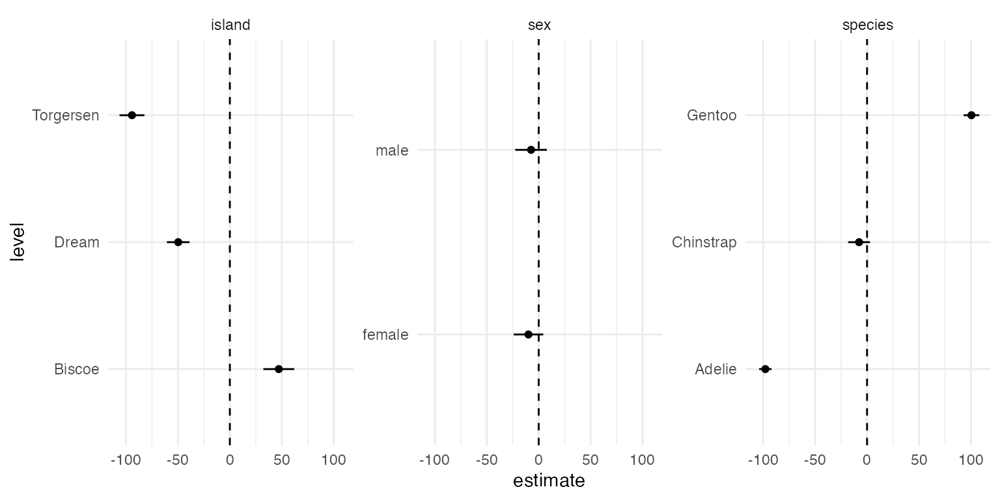
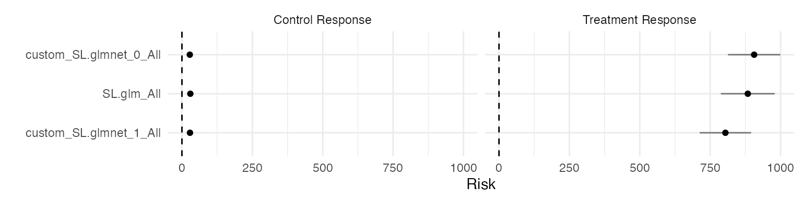
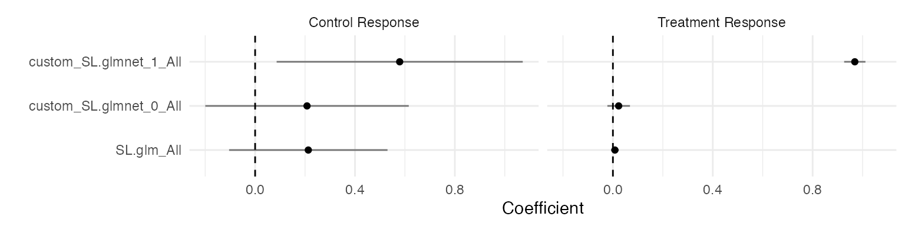

Methodological Details
Drew Dimmery (ddimmery@univie.ac.at)
Edward Kennedy (edward@stat.cmu.edu)
July 28, 2025
Source:vignettes/methodological_details.Rmd
methodological_details.RmdAbstract
In this paper, we introduce the tidyhte package
for estimation of heterogeneous treatment effects (HTE) from
observational or experimental data. This package implements the
methods of Kennedy (2020) and presents them
through a tidy-style user-facing API. The design principles
undergirding this package are (1) the APIs should be
tidy-friendly, (2) Analyses should be easy to replicate with minor
changes, (3) specifying complex ensembles for the nuisance
functions should be straightforward, and (4) sensible diagnostics
should be easily accessible. Plotting and formatting of the
results are left for the end-user to customize.
Summary
This document details how tidyhte constructs estimates
of heterogeneous treatment effects. It will highlight a variety of the
features of the package and discuss the mathematics which undergird
them.
After a brief introduction to the methods of HTE estimation of Kennedy (2020), the structure will
generally follow the estimation API of tidyhte: it will
begin by discussing the creation of cross-validation folds, then
highlight nuisance function estimation, proceed to the construction of
“pseudo outcomes”, a concept from Kennedy (2020), and conclude by
demonstrating the calculation of a few varieties of Quantities of
Interest: the actual statistics which are desired by the end-user.
Preliminaries
Problem Setting
Our data is defined by the triple , with , and . Define the following nuisance functions: $$ \pi(x) \equiv \mathbb{P}(A = 1 \mid X = x) \\ \mu_a(x) \equiv \mathbb{E}(Y \mid X = x, A = a) $$
Heterogeneous treatment effects are defined as the difference in conditional expectations under treatment and control, . Throughout, we will maintain the following assumptions:
Consistency:
No Unmeasured Confounding:
Positivity: with probability
Under these assumptions, .
For the remainder of this paper, we will use a semi-simulated running
example based on the penguins dataset of Horst, Hill, and Gorman (2020). We will imagine a randomly
assigned nutritional intervention for which we wish to measure the
causal effect on body mass. We also have a lower variance measurement of
the average food consumed per day over an observation period. Gentoo
penguins gain weight by this intervention on average, while vice-versa
for Adelie penguins. The average change in weight for Chinstrap penguins
is zero.
penguins <- within(penguins, {
id <- 1:n
propensity_score <- 0.5
treatment <- rbinom(n, 1, propensity_score)
tau <- 0.2 * (species == "Gentoo") - 0.2 * (species == "Adelie") + rnorm(n, sd = 0.05)
food_consumed_g <- rnorm(n, 500, 5) * (1 + tau * treatment)
body_mass_g <- body_mass_g * (1 + tau * treatment)
})Overview of Method
We begin by introducing the following “DR-Learner” algorithm:
DR-learner algorithm. This consists of three main steps:
- Given: estimates of nuisance functions trained elsewhere:
- Construct “pseudo-outcome: This quantity is a transformation of the provided nuisance function estimators.
- Second-stage regression: Construct a smoothing model over the transformed pseudo-outcome.
This algorithm is written assuming estimates of nuisance functions are trained on separate data and, therefore, can be treated as fixed. The easiest way to do this is with a sample-splitting procedure, after which results are averaged across splits.
The crucial result, Theorem 2 of Kennedy (2020), shows that the error of the second stage regression will match the error of an oracle regression of the true individual treatment effects on covariates up to a factor which depends on the product of the errors of the two estimated nuisance functions (that is, the errors in and in ).
When the second-stage regression is simple, like subgroup averages within cells defined by , the DR-Learner inherits unbiasedness and efficiency like an AIPW estimator (Robins, Rotnitzky, and Zhao 1995; Van der Laan, Laan, and Robins 2003; Tsiatis 2006; Tsiatis et al. 2008; Chernozhukov et al. 2018).
The approximation results of Kennedy (2020) applied to regressions on this transformed outcome allow for a lot of flexibility in quantities of interest that may be estimated. We will use this fact to allow the estimation of a variety of models as if they were estimated on the individual causal effects themselves: for example, variable importance measures operate off the assumption that various second-stage regressions will be accurate.
Principles
The tidyhte package is premised on the idea of breaking
up the analysis of HTEs into a few distinct parts, which can then be
mixed together as desired. The first step is to define a configuration
object (or recipe) describing at a high-level how HTE estimation should
be performed. During estimation, the specific variables of interest are
indicated. This design allows for repeating very similar analyses
multiple times with very little overhead. Instances when this might be
useful are when the user wishes to explore heterogeneity across a
variety of outcomes, or when there are a variety of treatment contrasts
of particular interest. Each of these analyses will tend to share common
features: similar classes of models will be included in the ensembles
for nuisance estimation, for example.
Also important is that the methods provided support the usage of common
Clustered data
A common feature of real-world data is that treatment may be
clustered. In other words, if one unit receives treatment, there may be
other units who are then also more likely to receive treatment. A common
example of this sort of design might be when villages or townships are
assigned to treatment, but measurement occurs at the individual level.
As discussed by Abadie et al. (2023), this design implies that
standard errors should be clustered at the level at which treatment was
assigned. The tidyhte package supports clustering as a
first class citizen, and resulting estimates will all receive the proper
statistical uncertainty estimates based around this clustering. In
practice, the end-user simply specifies the individual unit-id when
constructing cross-validation splits (make_splits()), and
all subsequent analyses take this into account.
Population weights
Another common feature of designs used in practice is that they come
from samples that do not perfectly represent the larger populations from
which they are drawn. The most common solution to this problem is
through the use of weights to make the sample more closely resemble the
population. This, too, is supported by tidyhte, by simply
specifying weights when models are estimated
(produce_plugin_estimates()). Downstream analyses will then
take weights into account appropriately.
Recipe API
In order to build up definitions around how HTE should be estimated,
tidyhte provides an API to progressively build up a
configuration object. A basic_config function creates a
bare-bones configuration consisting of only linear models for the
respective nuisance functions and a number of diagnostics.
cfg <- basic_config() %>%
add_known_propensity_score("propensity_score") %>%
add_outcome_model("SL.glmnet", alpha = c(0.0, 1.0)) %>%
add_moderator("Stratified", species, island, sex, year) %>%
add_moderator("KernelSmooth", bill_length_mm, bill_depth_mm, flipper_length_mm) %>%
add_vimp(sample_splitting = FALSE)Since the subject of interest is an experimental intervention, the propensity score is known. Using this known propensity score provides unbiasedness for many quantities of interest (although this may leave some efficiency on the table CITE). In this case, in addition to the (default) linear model included in the SuperLearner ensemble, we add an elastic-net regression (Zou and Hastie 2005). We sweep over a variety of mixing parameters between LASSO and ridge, throwing each of these models into the ensemble. This means that SuperLearner will perform model selection and averaging to identify the best hyper-parameter values (Van der Laan, Polley, and Hubbard 2007). Furthermore, we define all of the moderators of interest and how their results should be collected and displayed. Discrete moderators will just take stratified averages at each level of the moderator, while continuous moderators will use local polynomial regression (Fan and Gijbels 2018; Calonico, Cattaneo, and Farrell 2019). Finally, we add a variable importance measure from Williamson et al. (2021).
After the configuration is completed, it can be attached to the dataset.
penguins %<>% attach_config(cfg)Cross-validation
The first step in an analysis of heterogeneous treatment effects
following this procedure is to define how to construct splits to be used
for cross-validation. tidyhte accomplishes this by using
blocking methods to construct lower-variance splits than a purely
randomized splitting procedure would entail. Existing methods for
generating splits often provide options for stratifying based on a
binary outcome to ensure there is variance in the outcome in all splits,
even when the outcome is very sparse. For instance,
SuperLearner::SuperLearner.CV.control provides such an
option.
The appropriate function in tidyhte is
make_splits. This function takes in a dataframe and
determines a set of splits which accord with the provided unit
identifier and number of splits. If any covariates are provided to this
function, it will include them in a blocking design for constructing
randomized splits using the methods of Higgins,
Sävje, and Sekhon (2016)
as implemented in the quickblock package.
There are a few relevant methodological notes about how this blocking
for cross-validation strata works. In short, blocks are constructed
which are sized to be at least as large as the number of splits to use.
These blocks are constructed to minimize the within-block distance
between units (where distances are Euclidean based on the provided
covariates). When more than one row shares an identifier, blocking is
performed on the average covariate value within each identifier. Rows
with the same identifier are then assigned to the same split. Precise
details on the construction of blocks may be found in
higgins2016improving. Within each block, a vector of split
IDs is constructed which has a marginal distribution as close to the
uniform distribution over splits as possible (up to integer division
errors). This set of split IDs is then randomly permuted within
blocks.
Consistent with tidy semantics, the original dataframe is returned,
but with the addition of a column .split_id representing
these newly constructed splits, and a few attributes for bookkeeping
(e.g. the column name of the identifier). Since the object returned is
the same as what was passed in, this makes for easy chaining of commands
using dplyr.
penguins %<>% make_splits(id, species, sex, flipper_length_mm, .num_splits = 3)## `num_splits` must be even if VIMP is requested as a QoI. Rounding up.## Dropped 11 of 344 rows (3.2%) through listwise deletion.Note that tidyhte gracefully handles missing data via
listwise deletion. More advanced imputation methods are not yet
supported.
Nuisance function estimation
Estimation of nuisance functions such as the propensity score and the
outcome regression are typically handled by the SuperLearner library.
Specifying a full array of models with diverse hyperparameters is much
simplified through the tidyhte API. To specify a
cross-validated learner using SuperLearner syntax requires substantially
more boilerplate:
learners <- create.Learner(
"SL.glmnet",
tune = list(
alpha = c(0.05, 0.15, 0.2, 0.25, 0.5, 0.75)
),
detailed_names = TRUE,
name_prefix = paste0("SLglmnet")
)
CV.SuperLearner(label, covariates, SL.library = learners$names)In contrast, the tidyhte Recipe API requires only the
following one line:
add_outcome_model(cfg, "SL.glmnet", alpha = c(0.0, 0.25, 0.5, 0.75, 1.0))
penguins %<>% produce_plugin_estimates(
# outcome
food_consumed_g,
# treatment
treatment,
# covariates
species, island, sex, year, bill_length_mm, bill_depth_mm, flipper_length_mm
)Pseudo-outcome construction
Once nuisance functions are estimated, it is simply a matter of combining these results together into the appropriate pseudo-outcome. For typical HTE estimation, the pseudo-outcome of interest is the one analyzed by Kennedy (2020): the uncentered influence function of the average treatment effect (Robins, Rotnitzky, and Zhao 1995).
penguins %<>% construct_pseudo_outcomes(food_consumed_g, treatment)Quantities of interest
Finally, it comes to the most glamorous part of the analysis, when effects are estimated and put into charts.
The design of tidyhte chooses to leave the charting to
the end-user, but merely returns a tidy tibble with all of the requested
quantities of interest. The package focuses on a few types of quantities
of interest: - Marginal Conditional Average Treatment Effects (MCATEs):
the standard Conditional Average Treatment Effects (CATEs) in the
literature, in which all covariates except one are marginalized over,
providing one average effect for one level of a single covariate. This
is in contrast to a “Partial” CATE, in which other variables are
“controlled for” in some way. This does not provide a satisfying causal
interpretation without assumptions of joint randomization of treatment
and covariates. - Variable Importance (VIMP): Using Williamson et al. (2021),
tidyhte calculates how much each moderator contributes to
the overall reduction in mean-squared-error in a joint model of the
heterogeneous effects. - Diagnostics: A wide variety of diagnostics are
provided for all models fit as part of the tidyhte
estimation process. These include single-number summaries like
mean-squared-error or AUC, as well as entire receiver operating
characteristic curves and coefficients in the SuperLearner
ensembles.
penguins %>%
estimate_QoI(species, island, sex, year, bill_length_mm, bill_depth_mm, flipper_length_mm) ->
resultsThe resulting tibble provides looks like the following:
results## # A tibble: 333 × 6
## estimand term value level estimate std_error
## <chr> <chr> <dbl> <chr> <dbl> <dbl>
## 1 MCATE species NA Adelie -97.9 3.06
## 2 MCATE species NA Gentoo 101. 3.87
## 3 MCATE species NA Chinstrap -7.70 5.37
## 4 MCATE island NA Torgersen -94.2 6.14
## 5 MCATE island NA Biscoe 47.1 7.59
## 6 MCATE island NA Dream -49.7 5.54
## 7 MCATE sex NA male -7.35 7.77
## 8 MCATE sex NA female -9.85 7.27
## 9 MCATE year 2007 NA -13.1 9.36
## 10 MCATE year 2008 NA 0.809 9.41
## # ℹ 323 more rowsThe estimand column denotes the class of Quantities of
Interest to be estimated, and include such values as “MCATE” and “VIMP”.
The term column denotes the covariate being referred to (if
relevant) in the results. For example, a calculated MCATE refers to a
particular covariate, indicated by this column. The columns
value and level refer to quantities which
indicate a more granular division within a particular term, with the
former representing a numeric value while the latter indicates a
categorical one. For example, in the case of the MCATE, if the covariate
is discrete, the value at which the MCATE was calculated would be in the
level column, while if it were continuous, it would be in
the value column. Each of these columns is, therefore,
type-stable. The final two columns for estimate and
std_error are self explanatory. The details on their
calculation lie with the particular Quantity of Interest requested.
Plotting MCATEs
It’s then a simple matter to plot results using code like the following:
filter(results, estimand == "MCATE", is.na(value)) %>%
ggplot(aes(level, estimate)) +
geom_point() +
geom_linerange(aes(ymin = estimate - 1.96 * std_error, ymax = estimate + 1.96 * std_error)) +
geom_hline(yintercept = 0, linetype = "dashed") +
coord_flip() +
facet_wrap(~term, scales = "free_y")
filter(results, estimand == "MCATE", is.na(level)) %>%
ggplot(aes(value, estimate)) +
geom_line() +
geom_ribbon(
aes(ymin = estimate - 1.96 * std_error, ymax = estimate + 1.96 * std_error),
alpha = 0.5
) +
geom_hline(yintercept = 0, linetype = "dashed") +
scale_x_continuous("Covariate value") +
scale_y_continuous("CATE") +
coord_flip() +
facet_wrap(~term, scales = "free_y")Plotting diagnostics
Similarly, it’s easy to plot diagnostic information:
filter(results, estimand == "SL risk") %>%
ggplot(aes(reorder(term, estimate), estimate)) +
geom_point() +
geom_linerange(
aes(ymin = estimate - 1.96 * std_error, ymax = estimate + 1.96 * std_error),
alpha = 0.5
) +
geom_hline(yintercept = 0, linetype = "dashed") +
scale_x_discrete("") +
scale_y_continuous("Risk") +
facet_wrap(~level) +
coord_flip()
filter(results, estimand == "SL coefficient") %>%
ggplot(aes(reorder(term, estimate), estimate)) +
geom_point() +
geom_linerange(
aes(ymin = estimate - 1.96 * std_error, ymax = estimate + 1.96 * std_error),
alpha = 0.5
) +
geom_hline(yintercept = 0, linetype = "dashed") +
scale_x_discrete("") +
scale_y_continuous("Coefficient") +
facet_wrap(~level) +
coord_flip()
Plotting VIMP
And finally, we can examine the variable importance measure of Williamson et al. (2021) when applied to a joint model of the pseudo-outcome:
filter(results, estimand == "VIMP") %>%
ggplot(aes(reorder(term, estimate), estimate)) +
geom_point() +
geom_linerange(
aes(ymin = estimate - 1.96 * std_error, ymax = estimate + 1.96 * std_error),
alpha = 0.5
) +
geom_hline(yintercept = 0, linetype = "dashed") +
scale_x_discrete("") +
scale_y_continuous("Reduction in R²") +
coord_flip()
Replicating analyses
One of the biggest benefits of tidyhte is its ability to
repeat similar analyses.
As an example, to perform the same analysis used above on a different outcome would require the following code:
penguins %<>% produce_plugin_estimates(
# outcome
body_mass_g,
# treatment
treatment,
# covariates
species, island, sex, year, bill_length_mm, bill_depth_mm, flipper_length_mm
) %>%
construct_pseudo_outcomes(body_mass_g, treatment) %>%
estimate_QoI(
species, island, sex, year, bill_length_mm, bill_depth_mm, flipper_length_mm
) -> results_massAll the same quantities can be easily plotted for this outcome as well, and results may be joined together conveniently.
results_all <- bind_rows(
results %>% mutate(outcome = "food_consumed_g"),
results_mass %>% mutate(outcome = "body_mass_g")
)By allowing the user to flexibly compose HTE estimators, it drastically reduces the amount of work necessary for a typical HTE analysis which by nature tends to involve multiple moderators, models and outcomes.
Conclusion
This paper has introduced the concepts underlying the
tidyhte package and given examples as to how the package
can be used. In general, the package is written in a sufficiently
general way that some features can be added with relatively little work.
For instance, adding new plugin models is as simple as providing some
information on configuration as well as standardizing train / predict
methods. This is similarly true for providing new ways to summarize
CATEs for plotting, which is handled in much the same way. This makes it
relatively easy for methodologists to fit in their preferred fitting
methods and thereby extending tidyhte’s functionality.
Acknowledgements
We gratefully acknowledge the collaboration with the US 2020 Facebook
and Instagram Election Project for being a testbed for the initial
versions of tidyhte, particularly Pablo Barberá at Meta. We
received no financial support for this software project.